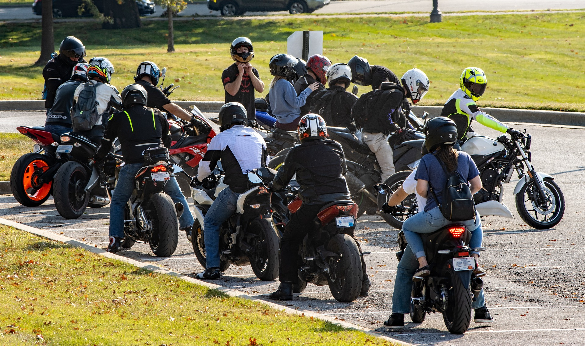

Encuentros

El epicentro de la pasión motociclista
Un evento que reúne a los amantes de las dos ruedas en una experiencia vibrante y llena de camaradería
El motoencuentro es un fenómeno que congrega a miles de entusiastas de las motocicletas en un encuentro lleno de emoción, amistad y una intensa pasión por las dos ruedas. Este evento anual, que se ha convertido en un verdadero referente para la comunidad motociclista, es una celebración única donde los motores rugen, las emociones se desatan y las historias se entrelazan.
El motoencuentro es mucho más que una simple reunión de motociclistas. Es un espacio donde convergen personas de diferentes orígenes, culturas y estilos de vida, unidas por la misma pasión por las motos. Durante varios días, los participantes tienen la oportunidad de compartir experiencias, explorar nuevos horizontes y establecer lazos de amistad duraderos.
En un motoencuentro, la diversidad de motocicletas es uno de los aspectos más fascinantes. Desde las clásicas y elegantes hasta las poderosas y audaces, cada moto es un reflejo de la personalidad y el estilo de su dueño. La exhibición de motocicletas es un deleite para la vista, donde se pueden admirar las formas, los colores y los detalles únicos de cada máquina, despertando admiración y conversaciones apasionadas entre los asistentes.
La programación del motoencuentro está repleta de actividades emocionantes y adrenalínicas. Desde impresionantes desfiles de motocicletas que recorren las calles de la ciudad hasta competencias de habilidad y destreza en dos ruedas, el espectáculo está garantizado. Los concursos de personalización de motos son otro punto culminante, donde los propietarios exhiben sus obras maestras customizadas, demostrando la creatividad y la dedicación que invierten en sus máquinas.
Pero no todo es acción sobre las dos ruedas. El motoencuentro también es una fiesta para los sentidos. La música en vivo, con bandas de rock, blues y otros géneros que llenan el aire con su energía, crea un ambiente festivo y electrizante. Los puestos de comida y bebida ofrecen una amplia variedad de opciones culinarias, desde platillos locales hasta delicias internacionales, satisfaciendo los paladares más exigentes.
El espíritu solidario también se hace presente en el motoencuentro, con numerosas actividades benéficas que buscan apoyar a causas nobles y dar un sentido de propósito a la celebración. Las organizaciones locales se benefician de la recaudación de fondos y donaciones generosas, reforzando el vínculo entre la comunidad motociclista y la sociedad en general.
En conclusión, el motoencuentro es un evento que va más allá de las motocicletas. Es una experiencia inolvidable que encapsula la pasión, la diversidad, la camaradería y la solidaridad. Durante esos días, las motos se convierten en el hilo conductor que une a personas de diferentes edades, géneros y procedencias, creando una comunidad única que celebra la libertad, la aventura y la hermandad. El motoencuentro es una ventana a un mundo donde el rugir de los motores y el viento en el rostro se fusionan para crear momentos de pura felicidad sobre dos ruedas.
El motoencuentro es mucho más que una simple reunión de motociclistas. Es un espacio donde convergen personas de diferentes orígenes, culturas y estilos de vida, unidas por la misma pasión por las motos. Durante varios días, los participantes tienen la oportunidad de compartir experiencias, explorar nuevos horizontes y establecer lazos de amistad duraderos.
En un motoencuentro, la diversidad de motocicletas es uno de los aspectos más fascinantes. Desde las clásicas y elegantes hasta las poderosas y audaces, cada moto es un reflejo de la personalidad y el estilo de su dueño. La exhibición de motocicletas es un deleite para la vista, donde se pueden admirar las formas, los colores y los detalles únicos de cada máquina, despertando admiración y conversaciones apasionadas entre los asistentes.
La programación del motoencuentro está repleta de actividades emocionantes y adrenalínicas. Desde impresionantes desfiles de motocicletas que recorren las calles de la ciudad hasta competencias de habilidad y destreza en dos ruedas, el espectáculo está garantizado. Los concursos de personalización de motos son otro punto culminante, donde los propietarios exhiben sus obras maestras customizadas, demostrando la creatividad y la dedicación que invierten en sus máquinas.
Pero no todo es acción sobre las dos ruedas. El motoencuentro también es una fiesta para los sentidos. La música en vivo, con bandas de rock, blues y otros géneros que llenan el aire con su energía, crea un ambiente festivo y electrizante. Los puestos de comida y bebida ofrecen una amplia variedad de opciones culinarias, desde platillos locales hasta delicias internacionales, satisfaciendo los paladares más exigentes.
El espíritu solidario también se hace presente en el motoencuentro, con numerosas actividades benéficas que buscan apoyar a causas nobles y dar un sentido de propósito a la celebración. Las organizaciones locales se benefician de la recaudación de fondos y donaciones generosas, reforzando el vínculo entre la comunidad motociclista y la sociedad en general.
En conclusión, el motoencuentro es un evento que va más allá de las motocicletas. Es una experiencia inolvidable que encapsula la pasión, la diversidad, la camaradería y la solidaridad. Durante esos días, las motos se convierten en el hilo conductor que une a personas de diferentes edades, géneros y procedencias, creando una comunidad única que celebra la libertad, la aventura y la hermandad. El motoencuentro es una ventana a un mundo donde el rugir de los motores y el viento en el rostro se fusionan para crear momentos de pura felicidad sobre dos ruedas.